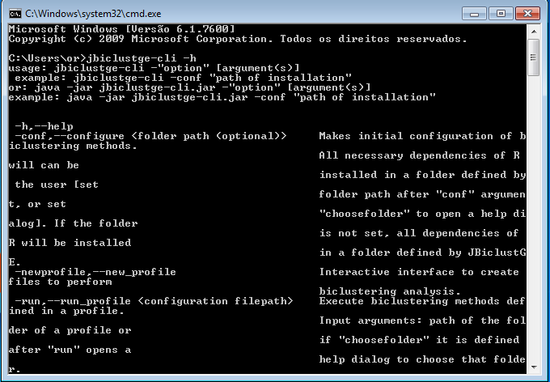
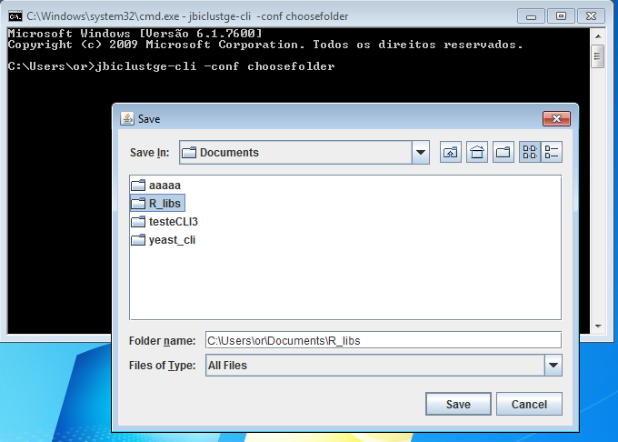
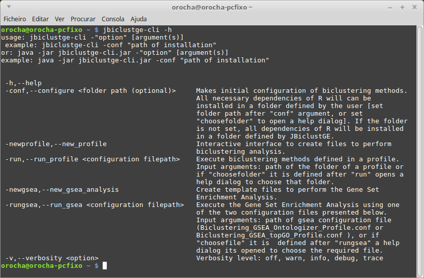
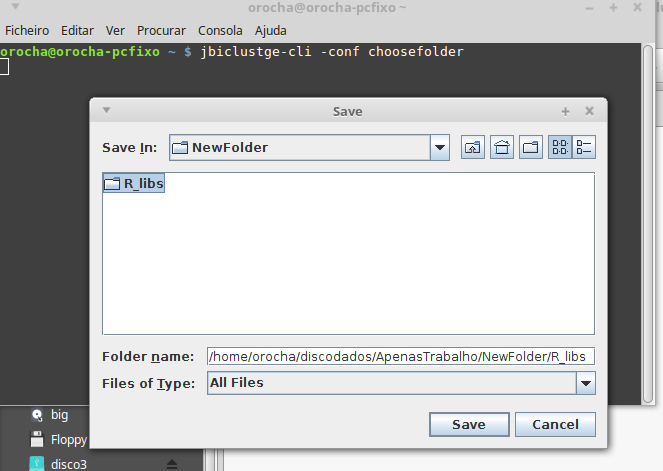

How to setup JBiclustGE
Requirements
In order to have access to all the functionalities provided by JBiclustGE is important to install first the R environment in your computer. Thus, install the R environment before the first execution of JBiclustGE. Otherwise, the JBiclustGE detects if the R environment it is installed or not and will advise you to install it.
The computer must be connected to the internet. In the first execution, JBiclustGE will download and configure all the necessary R packages.
Note: Users can install JBiclustGE without install the R environment, but some of the features and biclustering algorithms will not work.
JBiclustGE-GUI
In the first execution of JBiclustGE, it is presented the panel shown in figure 1. In this stage users can choose the folder where the R packages will be installed. If this option is set to "Automatic", these packages will be installed in a folder defined by JBiclustGE.
The necessary binaries of all algorithms will be downloaded from automatically from JBiclustGE website. However, users can provide the compressed file (zip) available in the downloads section
This process will take some minutes to be completed, because it will install all the necessary R packages.
JBiclustGE-CLI
Windows
- Open a Windows command line prompt "cmd".
-
write command "jbiclustge-cli -h" and press enter, this will allow you to check all the input commands.
 Figure 3: Help command that show the list of input arguments -
write command "jbiclustge-cli -conf choosefolder" and press enter, to configure the JBiclustGE-CLI execution environment.
 Figure 4: Window that help user to choose the folder, where the R packages will be installed
Linux
- Open the linux console
-
write "jbiclustge-cli -h" and press enter, this will allow you to check all the input commands
 Figure 5: Help command that show the list of input arguments -
write "jbiclustge-cli -conf choosefolder" and press enter, this will do the initial configuration of JBiclustGE-CLI, and all the necessary R packages will be installed in the directory that you have chosen
 Figure 6: Window that help user to choose the folder, where the R packages will be installed